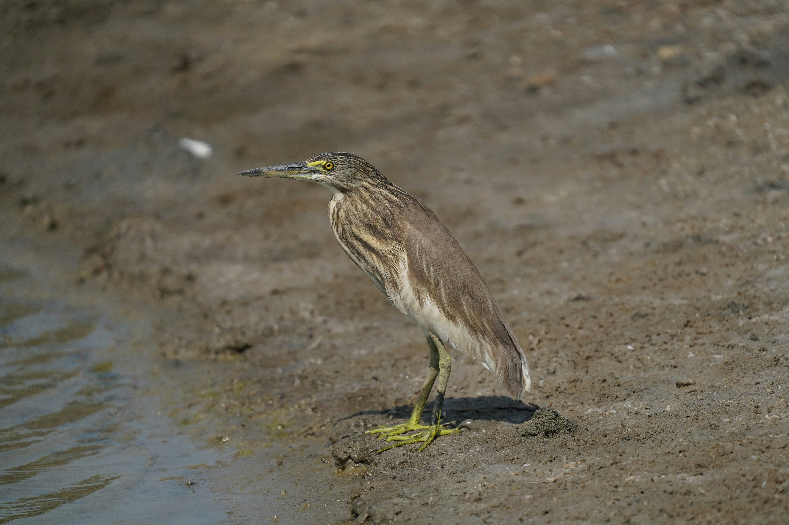

The Indian Pond Heron is a small, stocky heron that appears brown and streaked while standing but reveals striking white wings when it takes flight. It is one of the most familiar wetland birds in India and can be found around ponds, rice fields, marshes, canals, and even small water bodies in towns. It hunts by standing quietly and making rapid strikes at fish, frogs, insects, and other prey. Compared with the similar Cattle Egret, it is distinguished by the combination of features described above. Its preference for ponds, rice fields, marshes, canals, lakes, rivers, and wet grassland also helps separate it from species that use different habitats. Its characteristic behaviour, including usually stands motionless before making a rapid strike at prey, provides another useful field clue. Taken together, these differences make it easier to distinguish from similar species when the bird is seen clearly.